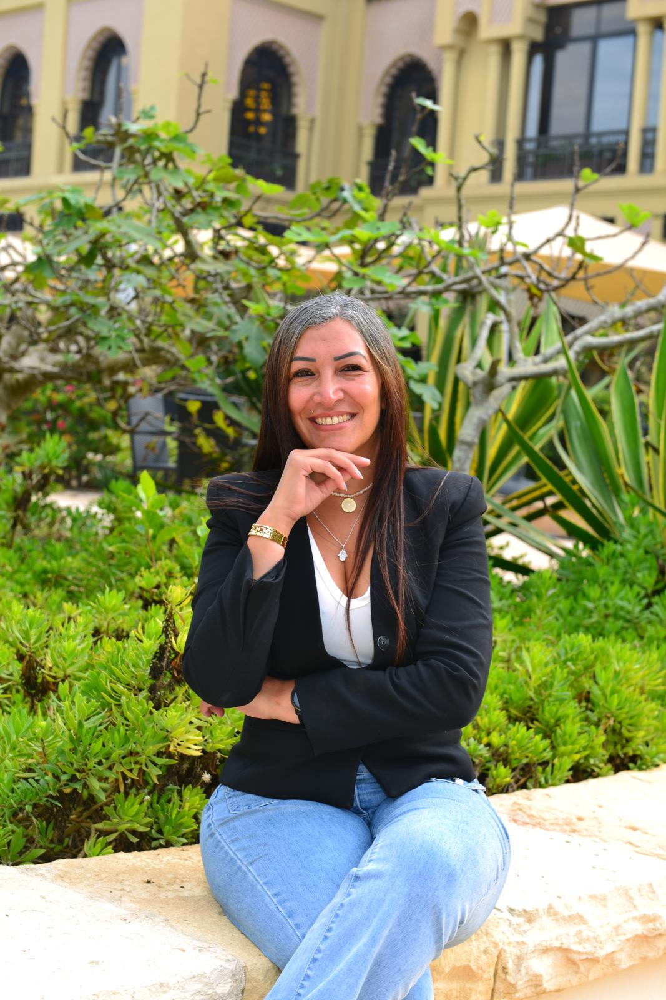

Eine Frau, Werte
und eine Leidenschaft.
BarkaFondatrice · Lyze Conciergerie

Mein Werdegang
Ich bin überzeugt, dass die schönsten Abenteuer oft mit dem tiefen Wunsch beginnen, dem eigenen Leben einen neuen Sinn zu geben.
Bevor ich Lyze Conciergerie gründete, arbeitete ich als Vertriebsassistentin in der Verkaufsverwaltung. Ein beruflicher Weg, der mich Sorgfalt, Organisation und die Bedeutung der Kundenbeziehung gelehrt hat.
Doch ich wollte weitergehen. Etwas schaffen, das wirklich zu mir passt, in dem ich meine Liebe zu schönen Dingen, meinen Sinn fürs Detail und vor allem das verbinden kann, was mich schon immer antreibt: der menschliche Kontakt.
Mit marokkanischen Wurzeln habe ich mich ganz natürlich Marokko zugewandt. Ein Land, mit dem ich tief verbunden bin, aber auch ein Land im Aufbruch, das schöne Perspektiven für Unternehmer bietet.
Mein Unternehmen zu gründen war eine wichtige Entscheidung. Wie bei jedem neuen Abenteuer gab es Zweifel, Fragen und manchmal Ängste. Doch meine Entschlossenheit und mein Wille zum Erfolg waren immer stärker.
Ich wollte ein Unternehmen nach meinem Bild aufbauen: menschlich, elegant, anspruchsvoll in der Qualität seiner Leistungen und dem Vertrauen zutiefst verpflichtet.
Ein Name mit Geschichte
Lyze ist nicht einfach ein Firmenname.
Der Name ist von dem meiner Tochter Lisa inspiriert. Eine Art, dieses berufliche Projekt mit dem zu verbinden, was mir am wertvollsten ist: meiner Familie.
Diese Wahl gibt Lyze Conciergerie eine ganz besondere Bedeutung. Hinter diesem Unternehmen stehen eine persönliche Geschichte, Werte und viel Herz.
Meine Vorstellung vom Concierge-Service
Für mich bedeutet Concierge-Service nicht nur, Buchungen zu verwalten oder Gäste zu empfangen.
Es ist vor allem eine menschliche Beziehung.
Ich weiß, dass es eine wichtige Entscheidung ist, die eigene Unterkunft einer externen Person anzuvertrauen. Deshalb stelle ich Vertrauen, Transparenz und ein offenes Ohr in den Mittelpunkt jeder Zusammenarbeit.
Ich liebe gepflegte Orte, eine einladende Atmosphäre und die kleinen Details, die den Unterschied machen. Jede Unterkunft verdient besondere Aufmerksamkeit, so wie jeder Eigentümer eine persönliche Begleitung verdient.
Mein Ziel ist es nicht nur, Immobilien zu verwalten, sondern dauerhafte Beziehungen aufzubauen, die auf Respekt, Nähe und Professionalität beruhen.
Heute möchte ich mit Lyze Conciergerie, in Casablanca, El Jadida und Marrakesch vertreten, Eigentümern die Gelassenheit bieten, die sie suchen, und zugleich ihr Eigentum aufwerten.
Ich glaube fest daran, dass ein Unternehmen professionell und anspruchsvoll sein und dabei zugänglich, herzlich und menschlich bleiben kann.
Denn hinter jeder Unterkunft stehen ein Eigentümer, eine Geschichte und ein Vertrauen, das man sich verdienen muss.
Und mit dieser Philosophie habe ich mich entschieden, Lyze Conciergerie aufzubauen.
„Denn hinter jeder Unterkunft stehen ein Eigentümer, eine Geschichte und ein Vertrauen, das man sich verdienen muss.“
— Barka, fondatrice